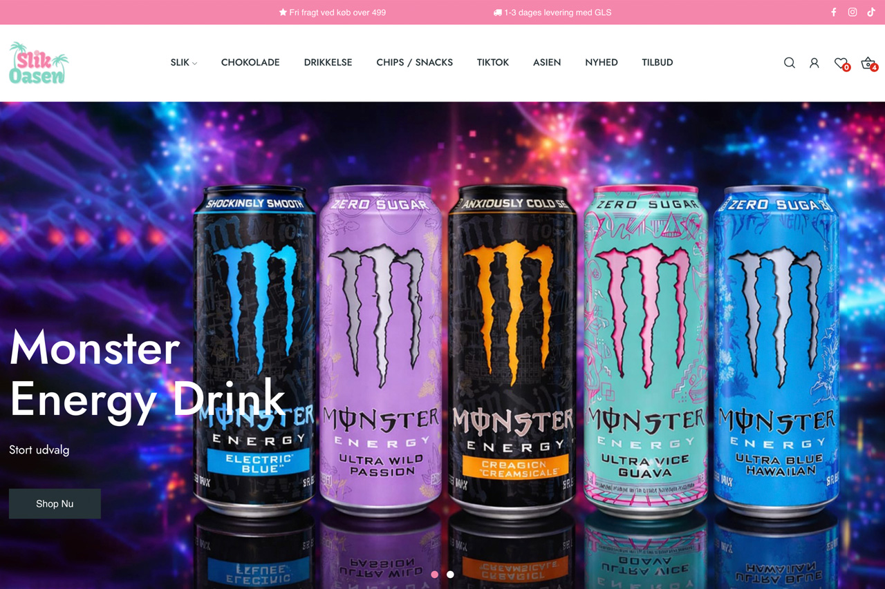

<div id="ajax-page" class="ajax-page-content">
  <div class="ajax-page-wrapper">
    <div class="ajax-page-nav">
      <div class="nav-item ajax-page-prev-next">
        <a class="ajax-page-load" href="case-snamix.html"><i class="lnr lnr-chevron-left"></i></a>
        <a class="ajax-page-load" href="case-ikiosk.html"><i class="lnr lnr-chevron-right"></i></a>
      </div>
      <div class="nav-item ajax-page-close-button">
        <a id="ajax-page-close-button" href="#"><i class="lnr lnr-cross"></i></a>
      </div>
    </div>

    <div class="ajax-page-title">
      <h1>SlikOasen</h1>
    </div>

    <div class="row">
      <div class="col-sm-8 col-md-8 portfolio-block">
        
      </div>

      <div class="col-sm-4 col-md-4 portfolio-block">
        <div class="project-description">
          <div class="block-title"><h3>Description</h3></div>
          <ul class="project-general-info">
            <li><p><i class="fa fa-user"></i> Yasir Rasool</p></li>
            <li><p><i class="fa fa-folder-open"></i> E-Commerce</p></li>
            <li><p><i class="fa fa-calendar"></i> 07.04.2026</p></li>
          </ul>

          <p class="text-justify">SlikOasen is a full e-commerce migration project from WooCommerce to PrestaShop, including structured product migration, URL and SEO continuity planning, and stable order and customer data transfer.</p>

          <div class="tags-block">
            <div class="block-title"><h3>Technology</h3></div>
            <ul class="tags">
              <li><a>WooCommerce</a></li>
              <li><a>PrestaShop</a></li>
              <li><a>PHP</a></li>
              <li><a>MySQL</a></li>
              <li><a>CSV/API Data Migration</a></li>
              <li><a>SEO Redirect Mapping</a></li>
            </ul>
          </div>
        </div>
      </div>
    </div>
  </div>
</div>
